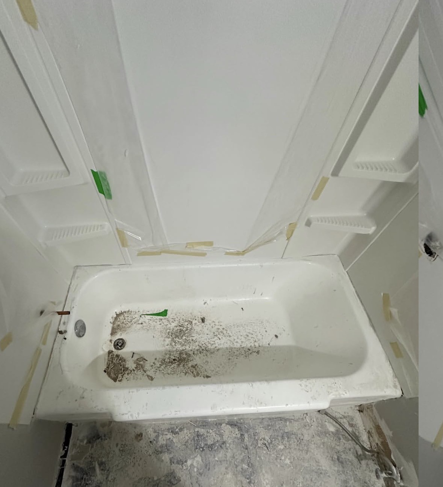
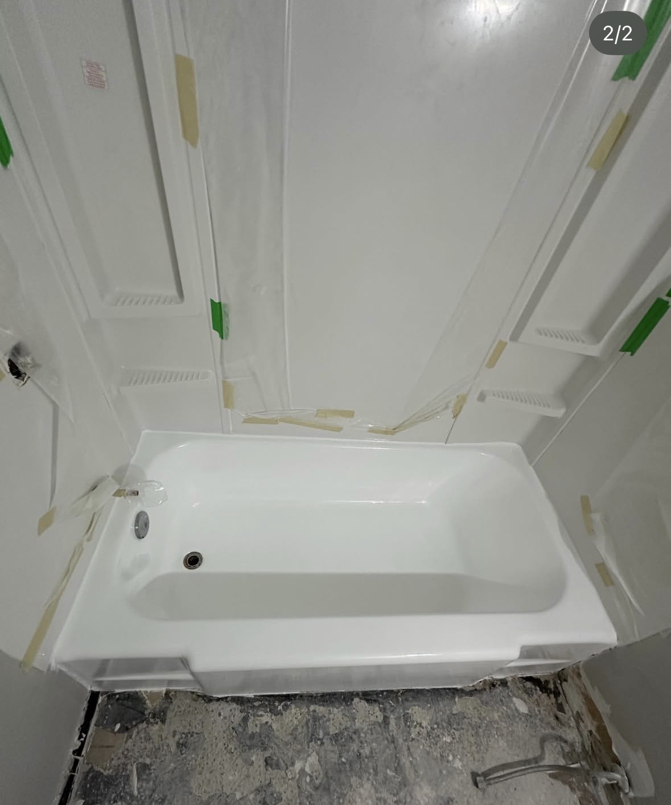
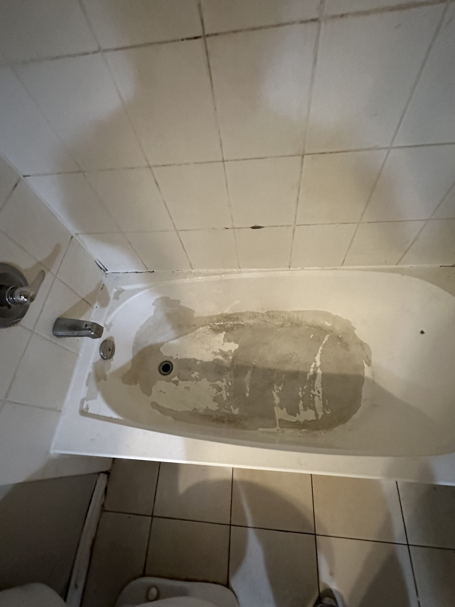
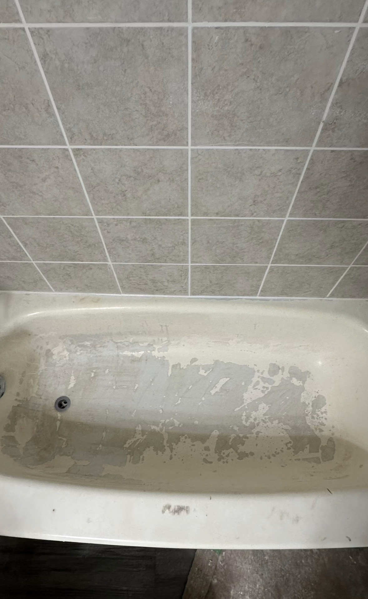
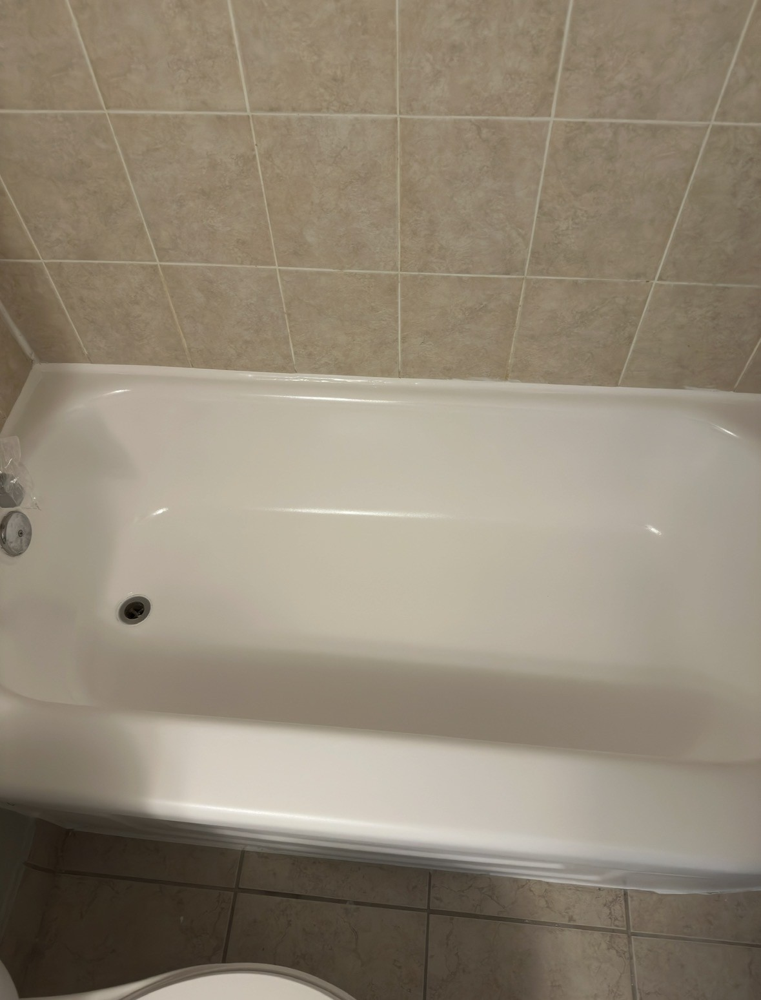

Real Before & After Transformations
Actual bathtub reglazing and refinishing projects completed by Taylor's Tub Refinishing.
Before

After

Before

After

Before

After

Connect With Taylor's Tub Refinishing
Follow along for before and after transformations, refinishing projects, and updates.